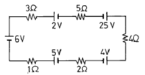
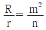
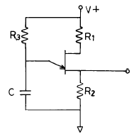
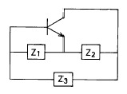
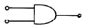
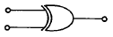
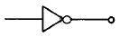
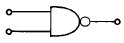

방송통신기능사 (2004-04-04 기출문제)
1과목: 임의 구분
1. 그림과 같은 회로에서 흐르는 전류는 얼마인가?

- 3[A]
- 2[A]
- 1[A]
- 0[A]
(정답률: 알수없음)

2. 기전력이 다른 전지를 병렬로 연결하면 어떤한 현상이 일어나는가?
- 전압이 증가되고 전류가 증가한다.
- 순환 전류로 인하여 기전력이 감쇠된다.
- 역기전력을 막는 역전류가 생겨서 전압이 증가한다.
- 누설 전류로 인하여 합성전류가 증가한다.
(정답률: 알수없음)
3. 여러개의 전지를 보다 경제적으로 사용하기 위해서 직병렬 혼합해서 사용하고 있는데 최대전류를 얻기 위한 경제적인 조건은? (단, m : 전지의 병렬수 , R : 외부저항, n : 병렬전지의 직렬수, r : 전지내부저항)
- nr = mR
- mn = rR
- nR = mr

(정답률: 알수없음)
4. 절연된 두 도체사이에 정전유도를 이용하여 많은 전기량을 저축하는 장치는?
- 저항기
- 축전기
- 건전지
- 유도기
(정답률: 알수없음)
5. RL직렬회로에서 임피던스 5[Ω], 저항 대 리액턴스의 비가 1 : √3 이면 저항은 몇 [Ω]인가?
- 2.5√3
- 2.5
- 5/√3
- 5
(정답률: 알수없음)
6. 직선도선에 전류가 흐를때 도선 주위에 생기는 자기장의 모양은?
- 타원형
- 방사상
- 원형
- 쌍곡선
(정답률: 알수없음)
7. 1000[AT/m]의 자장중에 어떤 자극을 놓았을때 3×102 [N]의 힘을 받는다고 한다. 자극의 세기는 얼마인가?
- 0.1 [Wb]
- 0.2 [Wb]
- 0.3 [Wb]
- 0.4 [Wb]
(정답률: 알수없음)
8. 다음 중 3가의 불순물이 아닌 것은?
- In
- Ga
- B
- Sb
(정답률: 알수없음)
9. 트랜지스터 증폭회로에서 부궤환을 걸어주면 발생되는 현상으로 틀린 것은?
- 잡음이 감소한다.
- 일그러짐이 감소한다.
- 안정도가 좋아진다.
- 전압이득이 커진다.
(정답률: 알수없음)
10. 어떤 교류전압의 평균값이 382[V]일때의 실효값은 몇 [V] 인가?
- 300 [V]
- 343 [V]
- 424 [V]
- 848 [V]
(정답률: 알수없음)
11. 진폭 변조에서 반송파가 Vc = 100sin 314 × 103t[V]이고 신호파가 Vs=70sin 377t[V]이면 변조도 ma는 몇 [%] 인가?
- 35[%]
- 50[%]
- 70[%]
- 85[%]
(정답률: 알수없음)
12. 입력신호가 0.2V에서 2V로 증폭되었을 때 증폭도는?
- 10[dB]
- 20[dB]
- 30[dB]
- 40[dB]
(정답률: 알수없음)
13. 다음 UJT 발진회로 출력단자에서 1[㎑] 발진신호가 얻어지고 있다. 발진주파수를 500[㎐]로 하려고 하는 경우 옳은 조작은?

- R1을 크게 한다.
- R2를 작게 한다.
- R3를 크게 한다.
- C를 작게 한다.
(정답률: 알수없음)
14. 다음 회로가 하아틀리 발진회로인 경우에 알맞는 것은?

- Z1:C, Z2:C, Z3:L
- Z1:C, Z2:C, Z3:C
- Z1:L, Z2:L, Z3:L
- Z1:L, Z2:L, Z3:C
(정답률: 알수없음)
15. 표본화정리에 의한 표본화 주파수는 신호파의 최고주파수의 몇 배 이상으로 선정하여야 하는가?
- 2배
- 4배
- 6배
- 8배
(정답률: 알수없음)
16. 중앙처리장치(CPU)의 구성에 포함되지 않는 것은?
- 제어 장치
- 연산 장치
- 입·출력 장치
- 레지스터
(정답률: 알수없음)
17. 십진수 9를 2진수로 변환하면?
- 1001
- 1010
- 0111
- 1011
(정답률: 알수없음)
18. 아래의 게이트 중 NAND 게이트는?




(정답률: 알수없음)
19. 다음 부울 대수 관계식이 틀린것은?
- A + 1 = A
- A ⦁ 1 = A
- A ⦁ 0 = 0
- A + A = A
(정답률: 알수없음)
20. 컴퓨터의 이용분야에 적당치 않은 것은?
- 정확한 과학 기술 계산
- 창조적인 업무
- 항공기의 좌석예약 업무
- 단순 반복되는 대량 업무처리
(정답률: 알수없음)
2과목: 임의 구분
21. 다음 중 시분할 시스템(time sharing system)에 해당하지 않는 것은?
- CPU에서 일을 부분별로 나누지 않고 일괄 처리한다.
- 일정한 시간내에 복수의 업무를 처리하는 방식이다.
- 과학기술 업무나 정보 검색 같은 업무에 적합하다.
- 단말장치로부터 프로그램과 데이터를 입력시킨다.
(정답률: 알수없음)
22. 다음 설명 중 옳지 않은 것은?
- compiler는 원시프로그램을 번역한다.
- compiler는 목적프로그램을 생산한다.
- interpreter는 목적프로그램을 생산한다
- interpreter는 원시프로그램을 번역한다.
(정답률: 알수없음)
23. 디지탈 전자계산기의 주요 구성회로는?
- 증폭회로
- 논리회로
- 연산회로
- 미적분회로
(정답률: 알수없음)
24. 컴퓨터 사용자가 중· 대형 컴퓨터와 대화를 주고 받을 때에 사용하는 입출력 장치로서, 컴퓨터 시스템의 작동과 정지 및 작업 관리 등을 통제할 수 있는 장치는?
- 음성 응답 장치
- X - Y 플로터
- 콘솔(console) 장치
- 콤(COM) 시스템
(정답률: 알수없음)
25. 컴퓨터에게 일의 처리를 지시하는 명령문들의 집합을 무엇이라고 하는가?
- 프로그램
- 프로그래머
- 순서도
- 프로그래밍
(정답률: 알수없음)
26. 광파이버는 광의 어떤 성질을 이용한 것인가?
- 굴절
- 회절
- 전반사
- 산란
(정답률: 알수없음)
27. 선로증폭기의 기준에 적합하지 않는 것은?
- TV 방송신호를 균일하게 증폭할 수 있어야 한다.
- 직접 동축케이블로부터 또는 별도의 전력선으로 전원을 공급받을 수 있어야 한다.
- 수동으로 출력신호의 세기를 조정할 수 없어야 한다.
- 등화기 및 감쇄기로 입력신호 레벨을 등화 또는 감쇄할 수 있어야 한다.
(정답률: 알수없음)
28. CATV 구내 전송선로설비에 사용되지 않는 것은?
- 컨버터
- 분기기 및 분배기
- 동축 케이블
- 증폭기
(정답률: 알수없음)
29. 일반 공중파방송에 대한 CATV의 설명으로 가장 거리가 먼 것은?
- 채널이 상대적으로 적다.
- 사업지역은 지역단위이다.
- 전송방식은 상방향성을 가진다.
- 전송품질은 상대적으로 우수하다.
(정답률: 알수없음)
30. 유선방송국설비의 구성요소가 아닌 것은?
- 주전송장치
- 수신공중선
- TV 카메라
- 광케이블
(정답률: 알수없음)
31. CATV 프로그램 중계용으로 사용할 수 없는 것은?
- 동축전송시설
- 광전송시설
- 위성시설
- CCTV
(정답률: 알수없음)
32. 쌍방향 건버터의 기능으로 적합치 않은 것은?
- 다채널 TV신호 선택기능
- 디스크램블기능
- 영상및 음성의 압축기능
- 데이터통신기능
(정답률: 알수없음)
33. 케이블TV 채널 40번의 주파수가 318∼324[㎒]이라 가정할 때, 영상반송파의 주파수는 몇[㎒]인가?
- 319.25
- 320.25
- 321.25
- 322.25
(정답률: 알수없음)
34. 방송의 디지털화 이점이라고 볼 수 없는 것은?
- 한정된 주파수 자원의 이용 효율의 증가
- 통신과 방송의 융합에 의한 방송서비스의 고도화
- 방송프로그램의 제작 코스트 절감
- 고도의 압축부호화 기술로 전문 방송채널의 축소화
(정답률: 알수없음)
35. NTSC 방식에 대한 설명에 맞지 않는 것은?
- 일본에서 제안한 컬러 TV방식이다.
- 휘도신호에다 2개의 색차신호(I,Q신호)를 색부 반송파에 실어 전송하는 방식이다.
- 색부반송파는 3.58 KHz를 이용한다.
- 한국, 미국 등지에서 채택하고 있다.
(정답률: 알수없음)
36. 방송위성 수신설비에 적합한 것은?
- 안테나, 전송로, 고잡음수신기
- 저잡음수신기, BS 튜너, 합성기
- 안테나, 컨버터, 위성수신기
- 컨버터, 변조기, 헤드엔드
(정답률: 알수없음)
37. 방송용 수동소자로서 사용되는 것으로 다음 전기적 특성이 맞지 않는 것은?
- 분배기는 신호를 균등분배한다.
- 분배기는 신호를 차등하게 분배한다.
- 분기기는 신호를 차등하게 분배한다.
- 분기기는 방향성 결합회로를 기본으로 한다.
(정답률: 알수없음)
38. 스펙트럼분석기(Spectrum Analyzer)의 설명과 거리가 먼 것은?
- RF신호를 주파수별 축으로 스펙트럼 크기를 표시하는 기기이다.
- TV 채널신호의 신호레벨을 측정할 수 있다.
- 2차 상호변조도, 3차 상호변조도, 혼변조도 등을 측정할 수 있다.
- 색도 대 휘도 특성을 측정할 수 있다.
(정답률: 알수없음)
39. 분기기의 입력 단자에 방송신호를 가했을 때 그 입력레벨과 분기단자에서 나오는 출력레벨과의 차이는?
- 분배손실
- 역결합손실
- 분기손실
- 삽입손실
(정답률: 알수없음)
40. 어떤 신호의 레벨 값이 0.1[mV]이라면 전계강도는?
- -1[dBmV]
- -10[dBmV]
- -20[dBmV]
- -30[dBmV]
(정답률: 알수없음)
3과목: 임의 구분
41. 다음 중 일반 가정용 지상파 TV 수신안테나로 가장 많이 이용되는 것은?
- 야기 안테나
- 롬빅 안테나
- 웨이브 안테나
- 수직 접지 안테나
(정답률: 알수없음)
42. 컬러 수상관이 구성하고 있는 Color 의 종류가 아닌 것은?
- RED
- GREEN
- BLUE
- BLACK
(정답률: 알수없음)
43. 안테나에서 수신한 RF신호를 충분한 신호품질과 적정 출력을 유지하는 장비는?
- Vectere Scope
- Modem
- Level Meter
- Signal Processor
(정답률: 알수없음)
44. 디지털 지상파TV 방송(ATSC방식)에서 채택하고 있는 영상압축방식은?
- MPEG-1
- MPEG-2
- MPEG-4
- MPEG-7
(정답률: 알수없음)
45. 하나의 영상 신호에 다른 하나의 영상을 겹치게 하는 기술로서, 일기예보 등에서 구름 사진을 보여줄 때 사용되는 화면합성기법은?
- 크로마키
- 콤포넌트
- 콤포지트
- 와이퍼
(정답률: 알수없음)
46. 종합유선방송국의 허가에 관한 사항으로 알맞는 것은?
- 대통령령이 정하는 바에 따라야 한다.
- 시장 또는 광역시장의 추천을 받아야 한다.
- 문화관광부장관의 허가를 받아야 한다.
- 정보통신부장관의 허가를 받아야 한다.
(정답률: 알수없음)
47. 방송법의 궁극적인 목적은?
- 공공복리의 증진
- 방송사업의 증대
- 방송미디어의 개발
- 방송망의 기술 발전
(정답률: 알수없음)
48. 종합유선방송국의 재허가를 받고자 할 때 정보통신부장관에게 신청서를 제출하여야 하는 기간은?
- 유효기간 만료 3월전
- 유효기간 만료 6월전
- 유효기간만료 1년전
- 유효기간만료 2년전
(정답률: 알수없음)
49. 방송위원회의 설치목적이 아닌 것은?
- 방송내용의 질적 향상
- 방송사업의 공정한 경쟁 도모
- 방송의 공적 책임 구현
- 방송산업의 발전 도모
(정답률: 알수없음)
50. CATV 전송용 동축케이블의 특성조건이 아닌 것은?
- 임피던스는 75[Ω]이다.
- 정재파비는 1.5 이하이다.
- 절연저항은 1000[MΩ/km] 이상이다.
- 내전압은 AC1000[V] 이상이다.
(정답률: 알수없음)
51. 공중선 전력의 허용 편차중 초단파방송 또는 텔레비전방송을 행하는 방송국의 송신설비의 허용편차는?
- 상한: 5%, 하한: 10%
- 상한: 10%, 하한: 20%
- 상한: 50%, 하한: 20%
- 상한: 50%, 하한: 50%
(정답률: 알수없음)
52. 전파사용료 계산시 고려되는 산출자료에 해당되지 않는 것은?
- 전파의 폭
- 공중선 전력
- 단말기의 종류
- 전파의 이용형태
(정답률: 알수없음)
53. 위성방송사업을 하고자 하는 경우 어떤 절차를 밟아야 하는가?
- 방송법이 정하는 바에 의하여 문화관광부장관의 허가를 받아야 한다.
- 방송위원회의 추천을 받아 전파법이 정하는 바에 의하여 정보통신부장관의 방송국 허가를 받아야 한다.
- 방송법이 정하는 바에 의하여 정보통신부장관의 방송국 허가를 받아야 한다.
- 방송법시행에 관한 방송위원회규칙이 정하는 바에 의하여 방송위원회에서 심사하여 승인한다.
(정답률: 알수없음)
54. 반송파가 진폭변조되는 송신장치의 변조도는 몇 [%]를 초과하지 않아야 하는가?
- 65
- 75
- 85
- 100
(정답률: 알수없음)
55. 정보통신공사 관련법에 의한 정보통신공사를 구분시 그 종류가 아닌 것은?
- 통신설비공사
- 선로설비공사
- 방송설비공사
- 정보설비공사
(정답률: 알수없음)
56. 다음 중 프로그램 제작설비에 속하지 않는 것은?
- 중계설비
- 녹음.녹화설비
- 영상조정설비
- 스튜디오 제작설비
(정답률: 알수없음)
57. 다음 중 정보통신공사업자 이외의 자가 시공할 수 있는 경미한 공사로 볼 수 없는 것은?
- 간이 무선국 시설공사
- 자기의 정보통신설비의 유지보수 공사
- 정보통신설비의 단말기 설치공사
- 종합유선방송 전송설비 공사
(정답률: 알수없음)
58. 다음 중 변조하기전의 정보를 포함하고 있는 주파수 대역을 일컫는 용어는?
- 고주파대역
- 기저대역
- 반송파대역
- 잔류측파대역
(정답률: 알수없음)
59. 방송위원회는 방송기술 및 시설에 관한 사항을 심의·의결할 경우에는 누구의 의견을 들어야 하는가?
- 대통령
- 문화관광부장관
- 정보통신부장관
- 방송기술자문위원회
(정답률: 알수없음)
60. 동축케이블· 분배기 및 분기기 등에 의한 상· 하향신호의 전송손실을 보상하기 위하여 사용하는 장치는?
- 증폭기
- 분배기
- 직렬단자
- 보호기
(정답률: 알수없음)